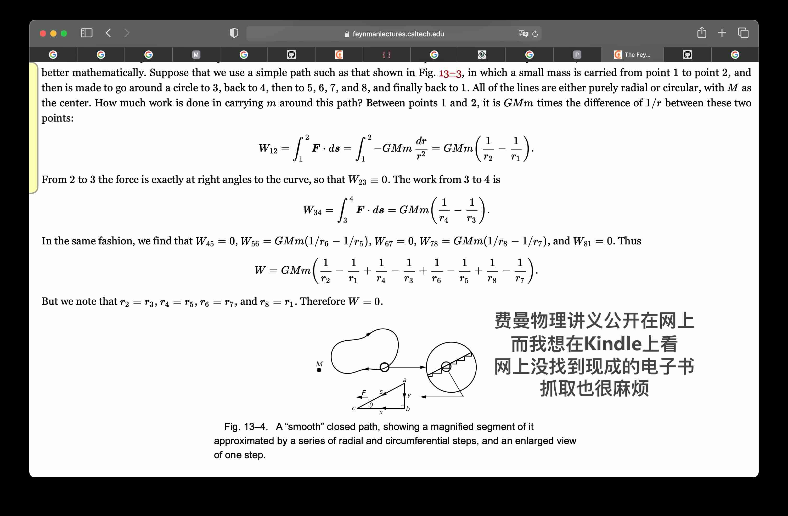
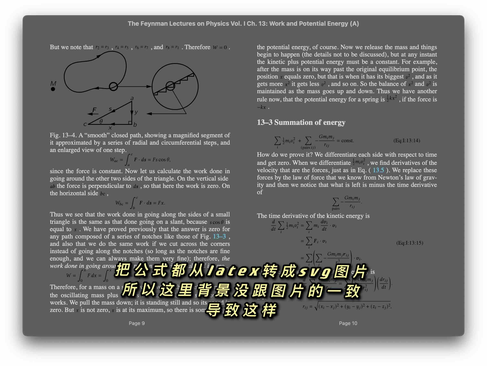

mathjax2mobi: MathJax HTML को ईबुक में बदलें | मूल, AI द्वारा अनुवादित
प्रोजेक्ट परिचय
पहले प्रोजेक्ट की सामान्य स्थिति के बारे में बात करते हैं।





प्रोजेक्ट पूरा करने के बाद, थोड़ा खुशी महसूस हुई। मैंने यह वाक्य लिखा।
एक दिन कोड लिखने के बाद, आखिरकार मुझे सुंदर फ़ेमन भौतिकी व्याख्यान की ई-बुक मिल गई! फ़ेमन भौतिकी व्याख्यान ऑनलाइन सार्वजनिक रूप से उपलब्ध है, जिसे latex का उपयोग करके रेंडर किया गया है। लोग अक्सर latex का उपयोग पेपर लिखने के लिए करते हैं, यह गणितीय सूत्रों को बहुत अच्छी तरह से रेंडर करता है। और इसे ऑनलाइन सार्वजनिक करने के लिए, mathjax लाइब्रेरी का उपयोग किया गया है। यह latex स्रोत कोड को html कोड में बदल देता है, जिससे बहुत सारे div और span टैग उत्पन्न होते हैं। हालांकि, ई-बुक इस तरीके का समर्थन नहीं करती है। इसलिए, विचार यह था कि वेबपेज को स्क्रैप किया जाए, mathjax रेंडरिंग को उल्टा किया जाए, और फिर इसे svg इमेज में बदल दिया जाए। इस प्रक्रिया में कई समस्याएं आईं, एक यह कि स्रोत कोड में बहुत सारे latex कस्टम मैक्रोज़ थे, जिन्हें जोड़ने की आवश्यकता थी; दूसरी यह कि बहुत सारे svg को एम्बेड करने में समस्याएं आईं। अगर एकल svg होता तो कोई समस्या नहीं होती, लेकिन जब बहुत सारे होते हैं तो समस्याएं आती हैं। यह शायद ब्राउज़र और svg के बीच कुछ अजीब बग के कारण होता है। इस समस्या को हल करने के लिए, svg को फ़ाइल के रूप में सहेजा गया और img टैग का उपयोग करके इसे शामिल किया गया। सूत्र भी दो प्रकार के होते हैं, एक वे जो टेक्स्ट के बीच में होते हैं, और दूसरे वे जो एकल पंक्ति में होते हैं। इसलिए, अंत में मुझे एक सुंदर ई-बुक मिल गई!
खोजे गए संसाधन
यहां परियोजना प्रक्रिया के दौरान एक्सेस किए गए संसाधनों को हल करने के लिए दर्ज किया गया है। चूंकि यह एक ट्यूटोरियल है, इसलिए छात्रों को यह दिखाने के लिए कि एक परियोजना बनाने का अनुभव कैसा होता है।


प्रोजेक्ट शुरू करना
फेयनमैन के भौतिकी व्याख्यान (Feynman Lectures on Physics) अब ऑनलाइन पढ़ने के लिए उपलब्ध हैं। मैं इसे Kindle पर पढ़ना चाहता हूँ। हालांकि, इसमें काफी सारे गणितीय सूत्र हैं। इसका मूल ड्राफ्ट शायद LaTeX में बनाया गया था। इसे वेबपेज पर प्रदर्शित करने के लिए MathJax लाइब्रेरी का उपयोग किया गया है, जो LaTeX फॉर्मेट को वेब पर दिखाता है।
एक उदाहरण लेते हैं।
<span class="MathJax_Preview" style="color: inherit; display: none;">
</span>
<div class="MathJax_Display">
<span class="MathJax MathJax_FullWidth" id="MathJax-Element-10-Frame" tabindex="0" style="">
<span class="mi" id="MathJax-Span-159" style="font-family: MathJax_Math-italic;">d<span style="display: inline-block; overflow: hidden; height: 1px; width: 0.003em;">
</span>
</span>
</div>
<script type="math/tex; mode=display" id="MathJax-Element-10">\begin{equation}
\label{Eq:I:13:3}
dT/dt = Fv.
\end{equation}
</script>
यह ऊपर दिया गया एक html कोड का एक अंश है। इस html कोड के भाग में, script टैग के अंदर latex का मूल टेक्स्ट है। mathjax इसे कई span में बदल देता है ताकि इसे प्रदर्शित किया जा सके।
हमारे पास अब एक विचार है। वह यह है कि mathjax के प्रदर्शन तरीके को svg चित्र में बदल दिया जाए।
GitHub पर एक प्रोजेक्ट tuxu/latex2svg ढूंढा।
from latex2svg import latex2svg
out = latex2svg(r'\( e^{i \pi} + 1 = 0 \)')
print(out['depth'])
print(out['svg'])
चलिए इसे चलाने की कोशिश करते हैं, लेकिन इसमें त्रुटि आ गई।
raise RuntimeError('latex not found')
RuntimeError: latex नहीं मिला
कोड देखें।
# LaTeX चलाएं और DVI फ़ाइल बनाएं
try:
ret = subprocess.run(shlex.split(params['latex_cmd']+' code.tex'),
stdout=subprocess.PIPE, stderr=subprocess.PIPE,
cwd=working_directory)
ret.check_returncode()
except FileNotFoundError:
raise RuntimeError('latex नहीं मिला')
यह भी latex कमांड पर निर्भर करता है।
इसे इंस्टॉल करें।
brew install --cask mactex
==> Caveats
MacTex CLI टूल्स की स्थापना प्रभावी होने के लिए आपको अपनी टर्मिनल विंडो को पुनः आरंभ करना होगा।
वैकल्पिक रूप से, Bash और Zsh उपयोगकर्ता निम्नलिखित कमांड चला सकते हैं:
eval "$(/usr/libexec/path_helper)"
==> Downloading http://mirror.ctan.org/systems/mac/mactex/mactex-20200407.pkg
==> Downloading from https://mirrors.aliyun.com/CTAN/systems/mac/mactex/mactex-20200407.pkg
######################################################################## 100.0%
सभी फॉर्मूला निर्भरताएं संतुष्ट हैं।
==> Cask mactex स्थापित कर रहा है
==> mactex के लिए इंस्टॉलर चल रहा है; आपका पासवर्ड आवश्यक हो सकता है।
installer: पैकेज का नाम MacTeX है
installer: choices परिवर्तन फ़ाइल '/private/tmp/choices20210315-4643-5884ro.xml' लागू की गई
installer: मूल पथ / पर स्थापित कर रहा है
installer: स्थापना सफल रही।
🍺 mactex सफलतापूर्वक स्थापित हो गया है!
इंस्टॉल सफलतापूर्वक पूरा हुआ।
% latex
यह pdfTeX है, संस्करण 3.14159265-2.6-1.40.21 (TeX Live 2020) (पूर्व-लोडेड प्रारूप=latex)
प्रतिबंधित \write18 सक्षम है.
**
out = latex2svg(r'\( e^{i \pi} + 1 = 0 \)')
print(out['depth'])
print(out['svg'])
यह कोड LaTeX गणितीय अभिव्यक्ति \( e^{i \pi} + 1 = 0 \) को SVG प्रारूप में परिवर्तित करता है और फिर परिणामी SVG की गहराई (depth) और SVG कोड को प्रिंट करता है।
svg = open('1.svg', 'w')
svg.write(out['svg'])
svg.close()
svg जनरेट किया जा सकता है।
इसलिए mathjax से प्राप्त latex टेक्स्ट को सभी को जनरेट करने का प्रयास करें।
from bs4 import BeautifulSoup
from latex2svg import latex2svg
file = open('The Feynman Lectures on Physics Vol. I Ch. 13_ Work and Potential Energy (A).html')
content = file.read()
soup = BeautifulSoup(content)
mathjaxs = soup.findAll('script', {'type': 'math/tex'})
for mathjax in mathjaxs:
print(mathjax.string)
out = latex2svg(mathjax.string)
print(out['svg'])
दुर्भाग्य से, एक त्रुटि हुई।
raise CalledProcessError(self.returncode, self.args, self.stdout,
subprocess.CalledProcessError: कमांड '['latex', '-interaction', 'nonstopmode', '-halt-on-error', 'code.tex']' ने गैर-рд╢реВрдиреНрдп рдПрдЧреНрдЬрд┐рдЯ рд╕реНрдЯреЗрдЯрд╕ 1 рд▓реМрдЯрд╛рдпрд╛ред
कौन सा सूत्र गलत है?
\tfrac{1}{2}mv^2
LaTeX
LaTeX एक उच्च-गुणवत्ता वाला टाइपसेटिंग सिस्टम है जो वैज्ञानिक और तकनीकी दस्तावेज़ों के लिए विशेष रूप से डिज़ाइन किया गया है। यह मुख्य रूप से गणितीय समीकरणों, तालिकाओं, और जटिल दस्तावेज़ों को प्रारूपित करने के लिए उपयोग किया जाता है। LaTeX को आमतौर पर .tex फ़ाइल एक्सटेंशन के साथ लिखा जाता है और इसे कंपाइल करके PDF या अन्य प्रारूपों में बदला जा सकता है।
LaTeX का उपयोग क्यों करें?
- पेशेवर दिखने वाले दस्तावेज़: LaTeX दस्तावेज़ों को पेशेवर और सुसंगत रूप से प्रारूपित करता है।
- गणितीय समीकरणों के लिए उत्कृष्ट समर्थन: LaTeX में गणितीय समीकरणों को लिखना और प्रारूपित करना आसान है।
- संदर्भ और सूची प्रबंधन: LaTeX में संदर्भों, सूचियों, और अनुक्रमणिका को स्वचालित रूप से प्रबंधित किया जा सकता है।
- मुक्त स्रोत और विस्तार योग्य: LaTeX मुक्त स्रोत है और इसे पैकेज और स्टाइल फ़ाइलों के माध्यम से विस्तारित किया जा सकता है।
LaTeX का एक सरल उदाहरण
\documentclass{article}
\usepackage[utf8]{inputenc}
\title{LaTeX का परिचय}
\author{आपका नाम}
\date{\today}
\begin{document}
\maketitle
\section{परिचय}
यह LaTeX का एक सरल उदाहरण है। LaTeX का उपयोग करके आप पेशेवर दिखने वाले दस्तावेज़ बना सकते हैं।
\section{गणितीय समीकरण}
LaTeX में गणितीय समीकरण लिखना बहुत आसान है। उदाहरण के लिए, पाइथागोरस प्रमेय को इस प्रकार लिखा जा सकता है:
\[
a^2 + b^2 = c^2
\]
\end{document}
LaTeX कैसे सीखें?
LaTeX सीखने के लिए आप निम्नलिखित संसाधनों का उपयोग कर सकते हैं:
- Overleaf: Overleaf एक ऑनलाइन LaTeX संपादक है जो LaTeX सीखने और दस्तावेज़ बनाने के लिए उत्कृष्ट है।
- LaTeX ट्यूटोरियल: इंटरनेट पर कई LaTeX ट्यूटोरियल उपलब्ध हैं जो आपको LaTeX सीखने में मदद कर सकते हैं।
- LaTeX पुस्तकें: LaTeX पर कई पुस्तकें उपलब्ध हैं जो आपको इसके बारे में गहराई से जानने में मदद कर सकती हैं।
LaTeX सीखना शुरू में थोड़ा चुनौतीपूर्ण हो सकता है, लेकिन एक बार जब आप इसे समझ जाते हैं, तो यह दस्तावेज़ बनाने का एक शक्तिशाली उपकरण बन जाता है।
latex सीखने आइए।
\documentclass[12pt]{article}
\usepackage{lingmacros}
\usepackage{tree-dvips}
\begin{document}
\section*{मेरे पेपर के लिए नोट्स}
टॉपिकलाइज़ेशन के उदाहरण शामिल करना न भूलें।
वे इस तरह दिखते हैं:
{\small \enumsentence{वाक्यात्मक विषय से विषयीकरण:\ \shortex{7}{a John$_i$ [a & kltukl & [el & {\bf l-}oltoir & er & ngii$_i$ & a Mary]]} { & {\bf R-}स्पष्ट & {\sc comp} & {\bf IR}.{\sc 3s}-प्यार & P & उसे & } {जॉन, (यह) स्पष्ट है कि मैरी उसे प्यार करती है।}} }
\subsection*{टॉपिकलाइज़ेशन को कैसे संभालें}
मैं बस एक पेड़ संरचना मान लूंगा जैसे (\ex{1})।
{\small \enumsentence{A$’$ प्रक्षेपणों की संरचना:\ [2ex] \begin{tabular}[t]{cccc} & \node{i}{CP}\ [2ex] \node{ii}{Spec} & &\node{iii}{C$’$}\ [2ex] &\node{iv}{C} & & \node{v}{SAgrP} \end{tabular} \nodeconnect{i}{ii} \nodeconnect{i}{iii} \nodeconnect{iii}{iv} \nodeconnect{iii}{v} } }
\subsection*{मनोदशा}
मूड बदलता है जब कोई विषय होता है, और साथ ही जब WH-आंदोलन होता है। \emph{Irrealis} वह मूड है जब Comp में कोई गैर-विषय विषय या WH-वाक्यांश होता है। \emph{Realis} वह मूड है जब कोई विषय विषय या WH-वाक्यांश होता है।
यह एक LaTeX दस्तावेज़ का अंत है। इसे हिंदी में अनुवाद करने की आवश्यकता नहीं है क्योंकि यह एक कोड ब्लॉक है और इसे अपरिवर्तित छोड़ देना चाहिए।
ऑनलाइन पर एक नमूना latex स्रोत कोड मिला।
% latex code.tex
This is pdfTeX, Version 3.14159265-2.6-1.40.21 (TeX Live 2020) (preloaded format=latex)
restricted \write18 enabled.
entering extended mode
(./code.tex
LaTeX2e <2020-02-02> patch level 5
L3 programming layer <2020-03-06>
(/usr/local/texlive/2020/texmf-dist/tex/latex/base/article.cls
Document Class: article 2019/12/20 v1.4l Standard LaTeX document class
(/usr/local/texlive/2020/texmf-dist/tex/latex/base/size12.clo))
(/usr/local/texlive/2020/texmf-dist/tex/latex/tree-dvips/lingmacros.sty)
(/usr/local/texlive/2020/texmf-dist/tex/latex/tree-dvips/tree-dvips.sty
tree-dvips version .91 of May 16, 1995
) (/usr/local/texlive/2020/texmf-dist/tex/latex/l3backend/l3backend-dvips.def)
(./code.aux) [1] (./code.aux) )
Output written on code.dvi (1 page, 3416 bytes).
Transcript written on code.log.

सोर्स कोड और रेंडर किए गए प्रभाव को देखकर, आइए देखें कि हम क्या सीख सकते हैं।
\begin{document}
\end{document}
इस तरह से दस्तावेज़ को लपेटें।
\section*{मेरे पेपर के लिए नोट्स}
यह section शीर्षक की शुरुआत को दर्शाता है।
\subsection*{टॉपिकलाइज़ेशन को कैसे संभालें}
यह उपशीर्षक को दर्शाता है।
\shortex{7}{a John$_i$ [a & kltukl & [el &
{\bf l-}oltoir & er & ngii$_i$ & a Mary]]}
(यह कोड ब्लॉक है, इसे अनुवादित नहीं किया जाना चाहिए।)

यहां $_i$ का उपयोग सबस्क्रिप्ट को दर्शाने के लिए किया जाता है। {\bf l-} का उपयोग बोल्ड टेक्स्ट को दर्शाने के लिए किया जाता है।
\enumsentence{A$'$ प्रक्षेपण की संरचना:\\ [2ex]
\begin{tabular}[t]{cccc}
& \node{i}{CP}\\ [2ex]
\node{ii}{Spec} & &\node{iii}{C$'$}\\ [2ex]
&\node{iv}{C} & & \node{v}{SAgrP}
\end{tabular}
\nodeconnect{i}{ii}
\nodeconnect{i}{iii}
\nodeconnect{iii}{iv}
\nodeconnect{iii}{v}
}

ध्यान दें कि nodeconnect का उपयोग कनेक्शन दिखाने के लिए किया जाता है।
LaTeX को SVG में कनवर्ट करना
LaTeX को SVG (Scalable Vector Graphics) में कनवर्ट करने के लिए कई तरीके हैं। यहां एक सामान्य विधि दी गई है:
-
LaTeX फ़ाइल तैयार करें: पहले अपनी LaTeX फ़ाइल तैयार करें। उदाहरण के लिए,
example.texनाम की एक फ़ाइल बनाएं और उसमें निम्नलिखित कोड डालें:\documentclass{standalone} \begin{document} Hello, \LaTeX! \end{document} -
LaTeX को PDF में कनवर्ट करें: LaTeX फ़ाइल को PDF में कनवर्ट करने के लिए
pdflatexका उपयोग करें:pdflatex example.texइससे
example.pdfफ़ाइल बन जाएगी। -
PDF को SVG में कनवर्ट करें: PDF फ़ाइल को SVG में कनवर्ट करने के लिए
pdf2svgटूल का उपयोग करें:pdf2svg example.pdf example.svgइससे
example.svgफ़ाइल बन जाएगी। -
SVG फ़ाइल का उपयोग करें: अब आप
example.svgफ़ाइल का उपयोग कर सकते हैं। इसे किसी भी वेब पेज या डॉक्यूमेंट में एम्बेड किया जा सकता है।
वैकल्पिक विधि: dvisvgm का उपयोग करना
यदि आप सीधे LaTeX को SVG में कनवर्ट करना चाहते हैं, तो आप dvisvgm टूल का उपयोग कर सकते हैं:
-
LaTeX को DVI में कनवर्ट करें:
latex example.texइससे
example.dviफ़ाइल बन जाएगी। -
DVI को SVG में कनवर्ट करें:
dvisvgm example.dviइससे
example.svgफ़ाइल बन जाएगी।
इन विधियों का उपयोग करके आप आसानी से LaTeX को SVG में कनवर्ट कर सकते हैं।
प्रोजेक्ट जारी रखें।
\documentclass[16pt]{article}
\usepackage{amsmath}
\begin{document}
[\tfrac{1}{2}mv^2]

इसे सही ढंग से प्रस्तुत किया जा सकता है। कोड में इसे प्रस्तुत नहीं किया जा सकता है, संभवतः \usepackage{amsmath} को जोड़ा नहीं गया है।
\documentclass[12pt,preview]{standalone}
\usepackage[utf8x]{inputenc}
\usepackage{amsmath}
\usepackage{amsfonts}
\usepackage{amssymb}
\usepackage{newtxtext}
\usepackage[libertine]{newtxmath}
यह LaTeX कोड है जो विभिन्न पैकेजों को लोड करता है। इन पैकेजों का उपयोग गणितीय समीकरणों, फोंट्स और अन्य प्रकार के टेक्स्ट फॉर्मेटिंग के लिए किया जाता है। इसे हिंदी में अनुवाद करने की आवश्यकता नहीं है क्योंकि यह कोड है और इसे वैसे ही छोड़ देना चाहिए।
\begin{document}
\begin{preview}
\tfrac{1}{2}mv^2
\end{preview}
\end{document}
! Missing $ inserted.
<inserted text>
$
l.12 \tfrac{1}{2}
mv^2
(यह एक LaTeX त्रुटि संदेश है, जिसका अनुवाद करने की आवश्यकता नहीं है।)
ऐसा करने से गलती हो गई। इसे इस तरह बदलने से ठीक हो जाएगा।
\[\tfrac{1}{2}mv^2\]
यह LaTeX कोड गतिज ऊर्जा (Kinetic Energy) के सूत्र को दर्शाता है। इसे हिंदी में इस प्रकार समझा जा सकता है:
[ \text{गतिज ऊर्जा} = \tfrac{1}{2} \times \text{द्रव्यमान} \times \text{वेग}^2 ]
यहाँ:
- ( m ) द्रव्यमान (mass) को दर्शाता है।
- ( v ) वेग (velocity) को दर्शाता है।
- ( \tfrac{1}{2}mv^2 ) गतिज ऊर्जा का सूत्र है।
विभिन्न प्रकार की जांच करें।
from bs4 import BeautifulSoup
from latex2svg import latex2svg
file = open('The Feynman Lectures on Physics Vol. I Ch. 13_ Work and Potential Energy (A).html')
content = file.read()
soup = BeautifulSoup(content, features=”lxml”)
mathjaxs = soup.findAll('script', {'type': 'math/tex'})
for mathjax in mathjaxs:
print(mathjax.string)
wrap = '$' + mathjax.string + '$'
# if 'frac' in mathjax.string:
# wrap = '$' + mathjax.string + '$'
if 'FLP' in mathjax.string:
continue
elif 'Fig' in mathjax.string:
continue
elif 'eps' in mathjax.string:
continue
out = latex2svg(wrap)
# print(out)
node = BeautifulSoup(out['svg'], features="lxml")
svg = node.find('svg')
mathjax.insert_after(svg)
# print(out['svg'])
# break
# mathjax.replaceWith(out['svg'])
# print(dir(mathjax))
# break
# out = latex2svg(wrap)
# print(out['svg'])
# print(len(soup.contents))
output_file = open('out.html', 'w')
output_file.write(soup.prettify())
output_file.close()
# print(soup.contents)
# out = latex2svg(r'\( e^{i \pi} + 1 = 0 \)')
# print(out['depth'])
# print(out['svg'])
# svg = open('1.svg', 'w')
# svg.write(out['svg'])
# svg.close()
यह कोड एक SVG फ़ाइल को लिखने के लिए उपयोग किया जाता है। open('1.svg', 'w') फ़ंक्शन 1.svg नाम की फ़ाइल को लिखने के लिए खोलता है। svg.write(out['svg']) फ़ंक्शन out['svg'] में संग्रहीत डेटा को फ़ाइल में लिखता है। अंत में, svg.close() फ़ंक्शन फ़ाइल को बंद कर देता है।
यह एक कोड ब्लॉक है, इसे अनुवादित नहीं किया जाना चाहिए।
मैं यह सब क्या जाँच रहा हूँ।
if 'FLP' in mathjax.string:
continue
elif 'Fig' in mathjax.string:
continue
elif 'eps' in mathjax.string:
continue
यहां जब latex स्रोत कोड में FLP, Fig, eps को पार्स करते समय, रूपांतरण प्रक्रिया में त्रुटि होती है।
उदाहरण के लिए, HTML में, ऐसा स्क्रिप्ट हो सकता है:
<script type="math/tex" id="MathJax-Element-11">\FLPF\cdot\FLPv</script>
पार्स करके प्राप्त किया:
\FLPF\cdot\FLPv
यह LaTeX कोड एक वेक्टर डॉट प्रोडक्ट को दर्शाता है, जहां \FLPF और \FLPv दो वेक्टर हैं। इसे हिंदी में “वेक्टर F और वेक्टर v का डॉट प्रोडक्ट” कहा जा सकता है।
जब कोड में रूपांतरण करते समय त्रुटि होती है। यानी, latex2svg.py में त्रुटि होती है। यहां latex प्रोग्राम का उपयोग करके रूपांतरण किया जाता है।
code.tex:
\documentclass[12pt,preview]{standalone}
\usepackage[utf8x]{inputenc}
\usepackage{amsmath}
\usepackage{amsfonts}
\usepackage{amssymb}
\usepackage{newtxtext}
\usepackage[libertine]{newtxmath}
\begin{document} \begin{preview} \begin{equation} \FLPF\cdot\FLPv \end{equation} \end{preview} \end{document}
```shell
$latex code.tex
! अपरिभाषित नियंत्रण अनुक्रम।
l.13 \FLPF
\cdot\FLPv
?
यह वास्तव में क्या समस्या थी। मैंने बाद में html में इस कोड पर ध्यान दिया।
<script type="text/x-mathjax-config;executed=true">
MathJax.Hub.Config({
TeX: {
Macros: {
FLPvec: ["\\boldsymbol{#1}", 1], Figvec: ["\\mathbf{#1}", 1], FLPC: ["\\FLPvec{C}", 0], FLPF: ["\\FLPvec{F}", 0], FLPa: ["\\FLPvec{a}", 0], FLPb: ["\\FLPvec{b}", 0], FLPr: ["\\FLPvec{r}", 0], FLPs: ["\\FLPvec{s}", 0], FLPv: ["\\FLPvec{v}", 0], ddt: ["\\frac{d#1}{d#2}", 2], epsO: ["\\epsilon_0", 0], FigC: ["\\Figvec{C}", 0]
}
}
});
</script>
इसका मतलब है कि जब वेबपेज रेंडर हो रहा होता है, तो MathJax को मैक्रोज़ सेट किया जाता है। इसलिए हमारे latex कन्वर्ज़न सोर्स कोड में भी इन्हें जोड़ा जाना चाहिए। चलिए इन्हें जोड़ते हैं।
\documentclass[12pt,preview]{standalone}
\usepackage[utf8x]{inputenc}
\usepackage{amsmath}
\usepackage{amsfonts}
\usepackage{amssymb}
\usepackage{newtxtext}
\usepackage[libertine]{newtxmath}
यह LaTeX कोड है जो दस्तावेज़ में विभिन्न पैकेजों को शामिल करता है। इन पैकेजों का उपयोग गणितीय समीकरणों, फ़ॉन्ट्स, और अन्य प्रकार के टेक्स्ट को प्रदर्शित करने के लिए किया जाता है। इसे हिंदी में अनुवाद करने की आवश्यकता नहीं है क्योंकि यह कोड है और इसे वैसे ही रखा जाना चाहिए।
\newcommand{\FLPvec}[1]{\boldsymbol{#1}} \newcommand{\Figvec}[1]{\mathbf{#1}} \newcommand{\FLPC}{\FLPvec{C}} \newcommand{\FLPF}{\FLPvec{F}} \newcommand{\FLPa}{\FLPvec{a}} \newcommand{\FLPb}{\FLPvec{a}} \newcommand{\FLPr}{\FLPvec{r}} \newcommand{\FLPs}{\FLPvec{s}} \newcommand{\FLPv}{\FLPvec{v}} \newcommand{\ddt}[2]{\frac{d#1}{d#2}} \newcommand{\epsO}{\epsilon_0} \newcommand{\FigC}{\Figvec{C}} \begin{document} \begin{preview} \begin{equation} \FLPF\cdot\FLPv \end{equation} \end{preview} \end{document}
यह सही है।

### कोड का विश्लेषण
आइए अंतिम कोड को देखें।
```python
import subprocess
from bs4 import BeautifulSoup
from latex2svg import latex2svg
यह कोड Python में लिखा गया है और इसमें तीन मॉड्यूल्स को इम्पोर्ट किया गया है:
-
subprocess: यह मॉड्यूल नए प्रक्रियाएं बनाने, उनसे कनेक्ट करने, और उनके इनपुट/आउटपुट/एरर पाइप्स को प्रबंधित करने के लिए उपयोग किया जाता है। -
BeautifulSoup(bs4 से): यह एक लाइब्रेरी है जो HTML और XML दस्तावेज़ों को पार्स करने और उनसे डेटा निकालने के लिए उपयोग की जाती है। -
latex2svg: यह एक लाइब्रेरी है जो LaTeX कोड को SVG (स्केलेबल वेक्टर ग्राफिक्स) में बदलने के लिए उपयोग की जाती है।
def clean_mathjax(soup, name, cls):
previews = soup.findAll(name, {'class': cls})
for preview in previews:
preview.decompose()
def clean_script(soup):
scripts = soup.findAll('script')
for s in scripts:
s.decompose()
यह कोड दो फ़ंक्शन्स को परिभाषित करता है:
-
clean_mathjax(soup, name, cls): यह फ़ंक्शन
soupऑब्जेक्ट में उन सभी एलिमेंट्स को ढूंढता है जिनका नामnameहै और जिनकी क्लासclsहै। फिर यह उन सभी एलिमेंट्स को हटा देता है। -
clean_script(soup): यह फ़ंक्शन
soupऑब्जेक्ट में सभी<script>टैग्स को ढूंढता है और उन्हें हटा देता है।
इन फ़ंक्शन्स का उपयोग HTML डॉक्यूमेंट से विशिष्ट एलिमेंट्स को साफ़ करने के लिए किया जाता है।
def wrap_latex(mathjax, equation = False):
wrap = ''
if equation:
wrap = mathjax.string
else:
wrap = '$' + mathjax.string + '$'
wrap = wrap.replace('label', 'tag')
return wrap
def wrap_svg(svg, equation):
if equation:
p = BeautifulSoup(f'<div style="text-align:center;"></div>', features="lxml")
p.div.append(svg)
return p.div
else:
return svg
def to_svg(mathjaxs, equation=False):
if equation:
svg_prefix = 'eq_'
else:
svg_prefix = 'in_'
i = 0
for mathjax in mathjaxs:
print(mathjax.string)
wrap = wrap_latex(mathjax, equation=equation)
out = {}
try:
out = latex2svg(wrap)
except subprocess.CalledProcessError as err:
raise err
f = open(f'svgs/{svg_prefix}{i}.svg', 'w')
f.write(out['svg'])
f.close()
node = BeautifulSoup('<img>', features="lxml")
img = node.find('img')
img.attrs['src'] = f'./svgs/{svg_prefix}{i}.svg'
img.attrs['style'] = 'vertical-align: middle; margin: 0.5em 0;'
p = wrap_svg(img, equation)
mathjax.insert_after(p)
i +=1
यह फ़ंक्शन to_svg MathJax स्ट्रिंग्स को SVG इमेज में बदलता है और उन्हें फ़ाइलों के रूप में सहेजता है। यहां बताया गया है कि यह कैसे काम करता है:
- पैरामीटर्स:
mathjaxs: MathJax स्ट्रिंग्स की एक सूची।equation: एक बूलियन फ्लैग जो यह निर्धारित करता है कि क्या यह एक समीकरण है या इनलाइन मैथ।
- SVG प्रीफ़िक्स:
- यदि
equationसही है, तो SVG फ़ाइलों का प्रीफ़िक्सeq_होगा। - अन्यथा, यह
in_होगा।
- यदि
- लूप:
- प्रत्येक MathJax स्ट्रिंग के लिए, इसे LaTeX में लपेटा जाता है और फिर
latex2svgफ़ंक्शन का उपयोग करके SVG में बदला जाता है। - यदि कोई त्रुटि होती है, तो इसे उठाया जाता है और प्रोग्राम रोक दिया जाता है।
- प्रत्येक MathJax स्ट्रिंग के लिए, इसे LaTeX में लपेटा जाता है और फिर
- फ़ाइल सहेजना:
- SVG आउटपुट को एक फ़ाइल में सहेजा जाता है, जिसका नाम
svgs/{svg_prefix}{i}.svgहोता है।
- SVG आउटपुट को एक फ़ाइल में सहेजा जाता है, जिसका नाम
- HTML इमेज टैग:
- एक
imgटैग बनाया जाता है और उसकाsrcएट्रिब्यूट SVG फ़ाइल के पथ पर सेट किया जाता है। styleएट्रिब्यूट को इमेज को सेंटर करने और मार्जिन देने के लिए सेट किया जाता है।
- एक
- HTML में सम्मिलित करना:
imgटैग को एकpटैग में लपेटा जाता है और इसे मूल MathJax स्ट्रिंग के बाद सम्मिलित किया जाता है।
- इंडेक्स बढ़ाना:
- प्रत्येक MathJax स्ट्रिंग के लिए इंडेक्स
iको 1 से बढ़ाया जाता है ताकि अगली SVG फ़ाइल का नाम अलग हो।
- प्रत्येक MathJax स्ट्रिंग के लिए इंडेक्स
def main():
file = open('The Feynman Lectures on Physics Vol. I Ch. 13_ Work and Potential Energy (A).html')
content = file.read()
soup = BeautifulSoup(content, features="lxml")
clean_mathjax(soup, 'span', 'MathJax')
clean_mathjax(soup, 'div', 'MathJax_Display')
clean_mathjax(soup, 'span', 'MathJax_Preview')
mathjaxs = soup.findAll('script', {'type': 'math/tex'})
to_svg(mathjaxs, equation=False)
mathjaxs = soup.findAll('script', {'type': 'math/tex; mode=display'})
to_svg(mathjaxs, equation=True)
clean_script(soup)
output_file = open('out.html', 'w')
output_file.write(soup.prettify())
output_file.close()
मुख्य()
जब हम पूरी ई-बुक को कन्वर्ट करना चाहते हैं, तो पहले एक पेज से शुरुआत कर सकते हैं।
```python
file = open('The Feynman Lectures on Physics Vol. I Ch. 13_ Work and Potential Energy (A).html')
content = file.read()
यहां एक पेज डाउनलोड किया गया है।
MathJax बहुत सारे div और span उत्पन्न करता है। इसका मतलब है कि उदाहरण के लिए T+U=const। MathJax इसे इस तरह से उत्पन्न करता है।
<span class="MathJax">T</span>
<span class="MathJax">+</span>
<span class="MathJax">U</span>
<span class="MathJax">=</span>
<span class="MathJax">const</span>
(यह कोड HTML में MathJax का उपयोग करके गणितीय समीकरण को प्रदर्शित करता है। इसे अनुवाद की आवश्यकता नहीं है क्योंकि यह कोड है और इसमें गणितीय चर और संकेत शामिल हैं जो सार्वभौमिक हैं।)
ये बहुत परेशान करने वाले हैं और हमारे टेक्स्ट को भी प्रभावित कर सकते हैं। क्योंकि पहले से ही svg है, इनकी आवश्यकता नहीं है।
def clean_mathjax(soup, name, cls):
previews = soup.findAll(name, {'class': cls})
for preview in previews:
preview.decompose()
यह कोड एक HTML सूप (soup) ऑब्जेक्ट में से MathJax प्रीव्यू को हटाने के लिए है। soup.findAll का उपयोग करके, यह सभी एलिमेंट्स को ढूंढता है जो दिए गए नाम (name) और क्लास (cls) से मेल खाते हैं। फिर, decompose() मेथड का उपयोग करके इन एलिमेंट्स को सूप से हटा दिया जाता है।
clean_mathjax(soup, 'span', 'MathJax')
clean_mathjax(soup, 'div', 'MathJax_Display')
clean_mathjax(soup, 'span', 'MathJax_Preview') ```
उन सभी को हटा दें।
mathjaxs = soup.findAll('script', {'type': 'math/tex'})
to_svg(mathjaxs, equation=False)
mathjaxs = soup.findAll('script', {'type': 'math/tex; mode=display'})
to_svg(mathjaxs, equation=True)
यहां ध्यान दें कि script दो प्रकार में विभाजित है।
m(dv/dt)=F
(यह समीकरण न्यूटन के द्वितीय नियम को दर्शाता है, जहाँ ( m ) द्रव्यमान है, ( v ) वेग है, ( t ) समय है, और ( F ) बल है। इसे हिंदी में इस प्रकार समझा जा सकता है: “द्रव्यमान और वेग के परिवर्तन की दर का गुणनफल बल के बराबर होता है।”)
यह इनलाइन रूप है।
\begin{equation}
\underset{\text{K.E.}}{\tfrac{1}{2}mv^2}+
\underset{\text{P.E.}}{\vphantom{\tfrac{1}{2}}mgh}=\text{const},\notag
यह पैराग्राफ के रूप में है।
जब इनलाइन फॉर्म में होता है, तो अभिव्यक्ति के दोनों ओर $ या [] जोड़ना आवश्यक होता है। अन्यथा, त्रुटि हो सकती है।
\begin{document}
\begin{preview}
\tfrac{1}{2}mv^2
\end{preview}
\end{document}
(ध्यान दें: कोड ब्लॉक को अनुवादित नहीं किया जाता है क्योंकि यह LaTeX कोड है, जो एक प्रोग्रामिंग भाषा है और इसे अनुवादित करने की आवश्यकता नहीं है।)
! $ डाला गया लापता है।
<डाला गया पाठ>
$
l.26 \tfrac{1}{2}
mv^2
इसे इस तरह बदलना होगा:
\begin{document}
\begin{preview}
$\tfrac{1}{2}mv^2$
\end{preview}
\end{document}
(यह कोड LaTeX में गतिज ऊर्जा के सूत्र को दर्शाता है, जिसे हिंदी में अनुवाद करने की आवश्यकता नहीं है।)
अब देखते हैं कि latex को svg में कैसे बदला जाए।
if equation:
svg_prefix = 'eq_'
else:
svg_prefix = 'in_'
% tree svgs
svgs
├── eq_0.svg
├── eq_1.svg
├── in_0.svg
इस तरह से svg को सहेजें।
def wrap_latex(mathjax, equation = False):
wrap = ''
if equation:
wrap = mathjax.string
else:
wrap = '$' + mathjax.string + '$'
wrap = wrap.replace('label', 'tag')
return wrap
यहां latex स्रोत कोड में कुछ समायोजन करने के लिए आ रहे हैं। ध्यान दें कि label को tag में बदल दिया गया है।

दाईं ओर (Eq:I:13:14) पर ध्यान दें। यदि यह label होता, तो यह पार्स नहीं हो पाता। यहां (1) दिखाई देगा। यहां अस्थायी रूप से tag का उपयोग करके इसे दर्शाया गया है, अभी इसकी गहराई से जांच नहीं की गई है।
फिर latex2svg.py को कॉल किया जाता है।
out = {}
try:
out = latex2svg(wrap)
except subprocess.CalledProcessError as err:
raise err
(यह कोड ब्लॉक को हिंदी में अनुवाद करने की आवश्यकता नहीं है क्योंकि यह प्रोग्रामिंग कोड है और इसे अपरिवर्तित छोड़ दिया जाना चाहिए।)
latex2svg.py को देखें।
# LaTeX चलाएं और DVI फ़ाइल बनाएं
try:
ret = subprocess.run(shlex.split(params['latex_cmd']+' code.tex'),
stdout=subprocess.PIPE, stderr=subprocess.PIPE,
cwd=working_directory)
ret.check_returncode()
except FileNotFoundError:
raise RuntimeError('latex नहीं मिला')
यहाँ latex कमांड को कॉल किया जा रहा है।
% latex --help
उपयोग: pdftex [विकल्प]... [TEXNAME[.tex]] [कमांड्स]
या: pdftex [विकल्प]... \FIRST-LINE
या: pdftex [विकल्प]... &FMT ARGS
TEXNAME पर pdfTeX चलाएं, आमतौर पर TEXNAME.pdf बनाते हैं।
try:
ret = subprocess.run(shlex.split(params['dvisvgm_cmd']+' code.dvi'),
stdout=subprocess.PIPE, stderr=subprocess.PIPE,
cwd=working_directory, env=env)
ret.check_returncode()
except FileNotFoundError:
raise RuntimeError('dvisvgm नहीं मिला')
यहाँ dvisvgm कमांड को कॉल किया जा रहा है।
% dvisvgm
dvisvgm 2.9.1
यह प्रोग्राम DVI फ़ाइलों को, जैसे कि TeX/LaTeX द्वारा बनाई गई हैं, साथ ही EPS और PDF फ़ाइलों को XML-आधारित स्केलेबल वेक्टर ग्राफ़िक्स फॉर्मेट SVG में परिवर्तित करता है।
उपयोग: dvisvgm [विकल्प] dvifile dvisvgm –eps [विकल्प] epsfile dvisvgm –pdf [विकल्प] pdffile
ऊपर बताया गया `latex` कस्टम मैक्रो कहाँ लिखा जाए? यहाँ `latex2svg.py` को संशोधित करना होगा। `default_preamble` को बदलें।
```python
default_preamble = r"""
\usepackage[utf8x]{inputenc}
\usepackage{amsmath}
\usepackage{amsfonts}
\usepackage{amssymb}
\usepackage{newtxtext}
\usepackage[libertine]{newtxmath}
यह कोड LaTeX दस्तावेज़ के लिए एक प्रीएम्बल (preamble) को परिभाषित करता है। प्रीएम्बल में विभिन्न पैकेज शामिल हैं जो दस्तावेज़ के फॉर्मेटिंग और गणितीय समीकरणों को प्रदर्शित करने के लिए आवश्यक हैं। इसमें inputenc पैकेज UTF-8 एन्कोडिंग के लिए, amsmath, amsfonts, और amssymb पैकेज गणितीय प्रतीकों और फोंट के लिए, और newtxtext तथा newtxmath पैकेज टेक्स्ट और गणितीय फोंट के लिए उपयोग किए जाते हैं।
\newcommand{\FLPvec}[1]{\boldsymbol{#1}} \newcommand{\Figvec}[1]{\mathbf{#1}} \newcommand{\FLPC}{\FLPvec{C}} \newcommand{\FLPF}{\FLPvec{F}} \newcommand{\FLPa}{\FLPvec{a}} \newcommand{\FLPb}{\FLPvec{a}} \newcommand{\FLPr}{\FLPvec{r}} \newcommand{\FLPs}{\FLPvec{s}} \newcommand{\FLPv}{\FLPvec{v}} \newcommand{\ddt}[2]{\frac{d#1}{d#2}} \newcommand{\epsO}{\epsilon_0} \newcommand{\FigC}{\Figvec{C}} “””
रूपांतरण सफल होने के बाद, फ़ाइल में लिखें।
```python
f = open(f'svgs/{svg_prefix}{i}.svg', 'w')
f.write(out['svg'])
f.close()
जारी रखें।
node = BeautifulSoup('<img>', features="lxml")
img = node.find('img')
img.attrs['src'] = f'./svgs/{svg_prefix}{i}.svg'
img.attrs['style'] = 'vertical-align: middle; margin: 0.5em 0;'
यहां एक img टैग बनाया गया है।
def wrap_svg(svg, equation):
if equation:
p = BeautifulSoup(f'<div style="text-align:center;"></div>', features="lxml")
p.div.append(svg)
return p.div
else:
return svg
p = wrap_svg(img, equation)
(नोट: कोड ब्लॉक को अनुवादित नहीं किया गया है क्योंकि यह प्रोग्रामिंग भाषा का हिस्सा है और इसे बदलने की आवश्यकता नहीं है।)
यदि latex एकल पैराग्राफ में है, तो इसे div से लपेटें और केंद्रित करें।
mathjax.insert_after(p)
यहां div टैग या img टैग को मूल script के बाद जोड़ा गया है।
def clean_script(soup):
scripts = soup.findAll('script')
for s in scripts:
s.decompose()
clean_script(soup)
(यह कोड ब्लॉक है और इसे अनुवादित नहीं किया जाना चाहिए।)
सभी latex को svg से बदलने के बाद, script की आवश्यकता नहीं रहती है। उन्हें हटा दें, इससे साफ-सुथरा दिखेगा।
अंत में, संशोधित पूरे html को एक फ़ाइल में लिखें।
output_file = open('out.html', 'w')
output_file.write(soup.prettify())
output_file.close()
फिर pandoc टूल का उपयोग करके, इसे epub में बदलें।
pandoc -s -r html out.html -o feynman.epub
(यह कमांड HTML फ़ाइल out.html को EPUB फ़ॉर्मेट में कन्वर्ट करके feynman.epub नामक फ़ाइल बनाती है।)
यह खुल जाएगा, और आपको एक सुंदर ई-बुक दिखाई देगी।
क्यों सीधे svg टैग को एम्बेड न करके img का उपयोग करके इसे शामिल किया जाता है। यानी कि इस तरह लिखा जाए:
<p></p>
<svg></svg>
<p></p>
एक बहुत ही अजीब bug है। जब बहुत सारे svg होते हैं, तो ऐसी स्थिति उत्पन्न होती है।

बाद में पता चला कि img टैग का उपयोग करके इसे शामिल करना काम करता है। यह क्यों होता है, यह समझ में नहीं आया। जब मैंने इस एकल svg को अलग से लिया और ब्राउज़र में देखा, तो कोई समस्या नहीं थी। ऐसा लगता है कि जब ब्राउज़र बहुत सारे svg को रेंडर करता है, तो यह गलती होती है।
अंत में
epub को mobi में कैसे बदलें, इसके लिए आप Kindle के आधिकारिक टूल Kindle Previewer 3 का उपयोग कर सकते हैं। ध्यान दें कि यहां सिर्फ एक अध्याय है।
इस प्रोजेक्ट का कोड feynman-lectures-mobi@lzwjava पर उपलब्ध है।
सभी पेजों को कैसे क्रॉल करके इलेक्ट्रॉनिक बुक में संगठित किया जाए, यह बाद में बताऊंगा। लेकिन फ़ेनमैन के भौतिकी व्याख्यान का यह एक अध्याय भी देखने के लिए काफी है। ठीक है, चलो Kindle उठाएं और पढ़ना शुरू करें।